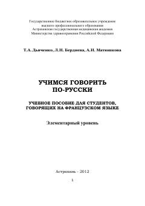

УГFransuz tilida so'zlashuvchi talabalar uchun rus tili bo'yicha o'quv qo'llanma.
Ushbu o'quv qo'llanma fransuz tilida so'zlashuvchi xorijlik talabalar uchun rus tilini o'rganishga mo'ljallangan. Kitob kundalik hayot, o'qish va ijtimoiy muloqot uchun zarur bo'lgan dialoglar hamda leksik-grammatik mashqlarni o'z ichiga oladi.